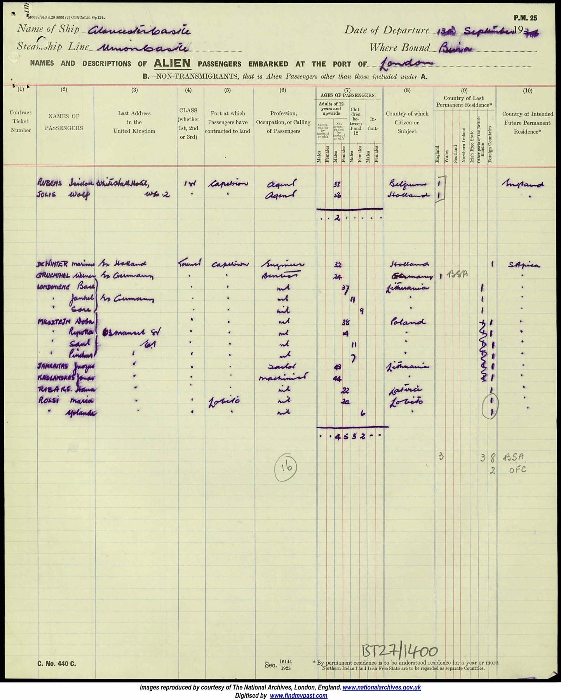

The Opalin story / 1934
A passport.
Three children.
A journey out.
The strongest route evidence is a sequence of documents. Recollections fill in the experience, while the stamps and manifest anchor the dates.
Moshe and Arke went first
Minnie recalls Moshe leaving around 1929, several years before Doba. Ben identifies Arke as the eldest brother and says he travelled ahead of the three younger children. Their own passenger lists have not been located. The 1934 manifest must not be used as evidence of Moshe’s voyage.Minnie Spitalnik - 1uncle ben interview - 1Minnie – 1, 23:06–24:23; Ben – 1, 04:24–05:35
Ben remembers Brazil as the first intended destination and says grandfather Leibish suggested South Africa when visas could not be secured. Minnie names Stillman and Kirshner among Moshe’s fellow emigrants and a person sounding like Biederman who helped arrange papers. Spellings and details remain leads.uncle ben interview - 1Minnie Spitalnik - 1Minnie Spitalnik - 2Ben – 1, 20:00–22:00; Minnie – 1, 39:40–44:43; Minnie – 2, 13:09–15:30
The European paper trail
- 21 August 1934 · Warsaw
South African settlement visa issued at the British Passport Office.South African settlement visa
- 1 September · Warsaw
Emigration inspector’s approval appears in the passport observations.Passport observations and emigration approval
- 3 September · Warsaw
German transit visa allows passage through Germany.German transit visa
- 6 September · Zbąszyń
Polish border-control departure stamp.Polish border-control stamp
- 13 September · London
Gloucester Castle manifest names Doba and the three children, booked to land at Cape Town.Gloucester Castle passenger manifest, 1934
- 7 October · South Africa
Riva’s identification card records Gloucester Castle with this date.Rywka Milsztejn identification card


What the children remembered
The recordings recall a horse-and-cart journey to a railway station, a stay with a Lederer uncle whose Warsaw bakery occupied a basement, and hospitality during a London stop. Recalled durations and sequences do not all agree; they are not used to overwrite the dated documents.Talking of Opalin - 1uncle ben interview - 1Opalin – 1, 20:13–27:07; Ben – 1, 34:20–39:59
Riva’s seasickness and the train journey inland give the crossing a human scale. Ben remembers Moshe meeting their train near Johannesburg and names Germiston in the later interview. These scenes are family testimony, separate from the arrival entry.Talking of Opalin - 1uncle ben interview - 1uncle ben interview - 2Ben – 1, 41:00–42:00; Ben – 2, 00:00–01:30
An age discrepancy we can now see

The card gives Riva’s birth as 19 November 1919, and the manifest lists Rywka aged fourteen in September 1934. A 7 October 1934 arrival would still be before her fifteenth birthday. Mark’s remembered age of sixteen on arrival remains part of the family account, but conflicts with these two documents.Rywka Milsztejn identification cardGloucester Castle passenger manifest, 1934Mark Cohen’s family recollections